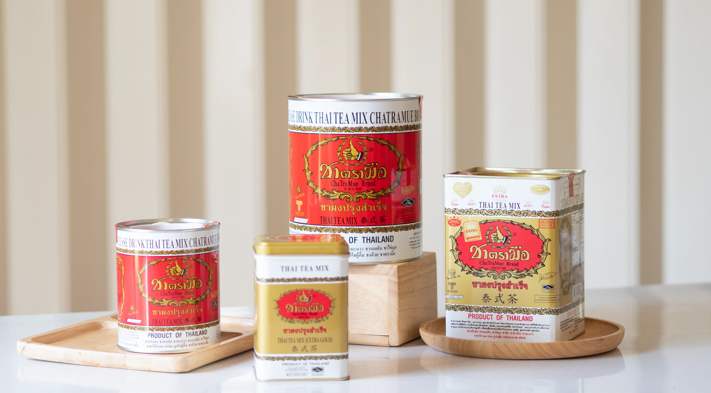

Về chúng tôi

Từ thương hiệu đã gắn bó với người dân Thái Lan hơn 75 năm, truyền từ đời này sang đời khác, "ChaTraMue" là nhà sản xuất trà quyết tâm làm rung chuyển ngành trà Thái Lan để được biết đến và tạo ra "Trà Thái" được mọi người trên khắp thế giới chấp nhận. Nguyên tắc mà thương hiệu luôn tuân thủ là sự trung thực. Ý định của tất cả các bên là sản xuất trà chất lượng, thơm ngon cho người Thái Lan và người dân trên khắp thế giới thưởng thức. Thông qua quy trình sản xuất độc đáo và các tiêu chuẩn hệ thống quản lý nhà máy.